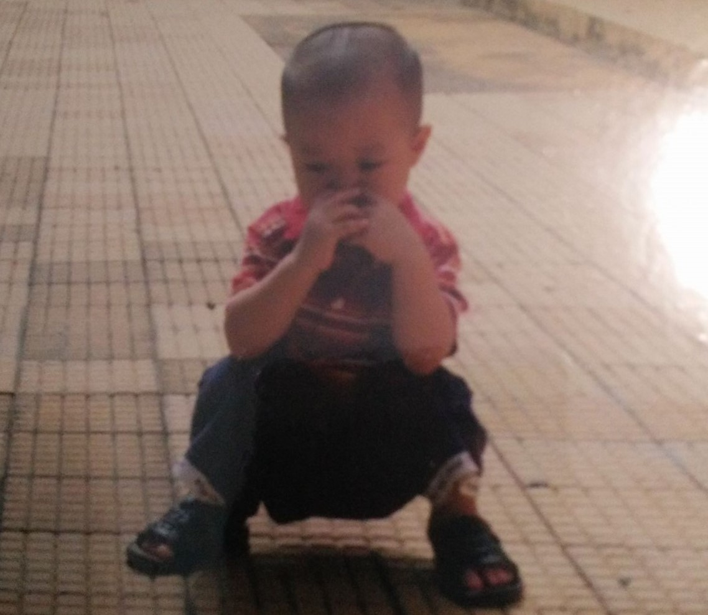
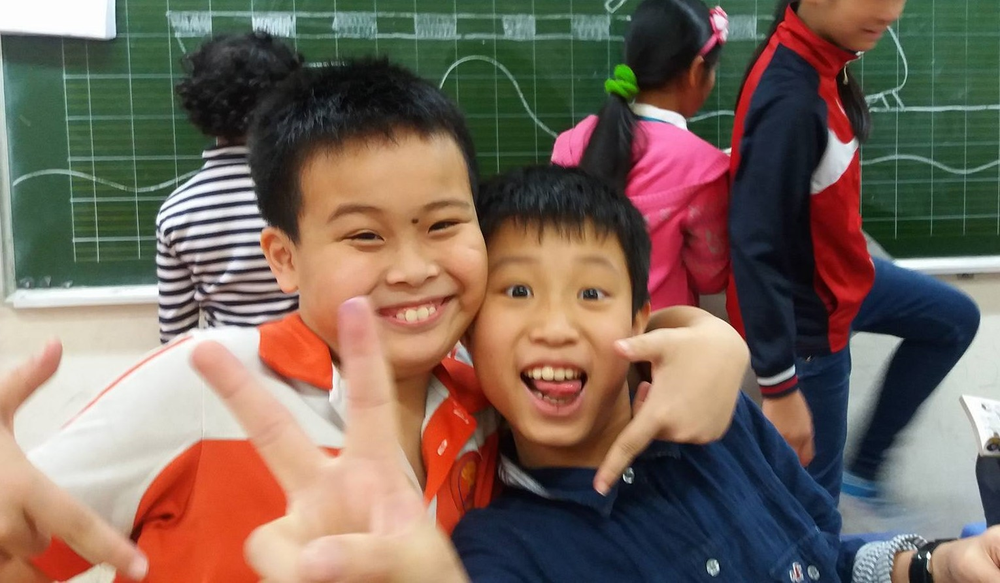

I was born on 15 Septmeber 2005. Temp: If you can imagine a furry humanoid seven feet tall, with the face of an intelligent gorilla and the braincase of a man, you'll have a rough idea of what they looked like -- except for their teeth. The canines would have fitted better in the face of a tiger, and showed at the corners of their wide, thin-lipped mouths, giving them an expression of ferocity.If you can imagine a furry humanoid seven feet tall, with the face of an intelligent gorilla and the braincase of a man, you'll have a rough idea of what they looked like -- except for their teeth. The canines would have fitted better in the face of a tiger, and showed at the corners of their wide, thin-lipped mouths, giving them an expression of ferocity.
My primary school days were full of friends and talent shows. Temp: Here's the thing. She doesn't have anything to prove, but she is going to anyway. That's just her character. She knows she doesn't have to, but she still will just to show you that she can. Doubt her more and she'll prove she can again. We all already know this and you will too.Here's the thing. She doesn't have anything to prove, but she is going to anyway. That's just her character. She knows she doesn't have to, but she still will just to show you that she can. Doubt her more and she'll prove she can again. We all already know this and you will too.
I spent the next 4 years growing both mentally and physically in Nam Trung Yen. Temp: There was a reason for her shyness. Everyone assumed it had always been there but she knew better. She knew the exact moment that the shyness began. It had been that fateful moment at the lake. There are just some events that do that to you.There was a reason for her shyness. Everyone assumed it had always been there but she knew better. She knew the exact moment that the shyness began. It had been that fateful moment at the lake. There are just some events that do that to you.There was a reason for her shyness. Everyone assumed it had always been there but she knew better. She knew the exact moment that the shyness began. It had been that fateful moment at the lake. There are just some events that do that to you.
Highschool days were of course my most memorable experience. Temp: There was little doubt that the bridge was unsafe. All one had to do was look at it to know that with certainty. Yet Bob didn't see another option. He may have been able to work one out if he had a bit of time to think things through, but time was something he didn't have. A choice needed to be made, and it needed to be made quickly.There was little doubt that the bridge was unsafe. All one had to do was look at it to know that with certainty. Yet Bob didn't see another option. He may have been able to work one out if he had a bit of time to think things through, but time was something he didn't have. A choice needed to be made, and it needed to be made quickly.